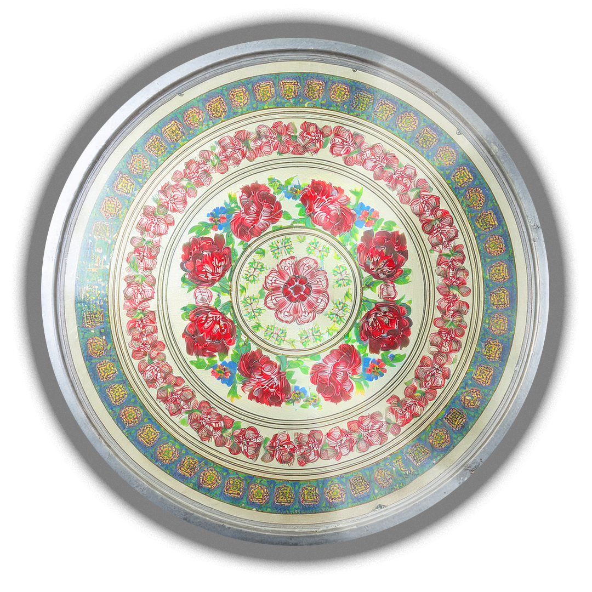
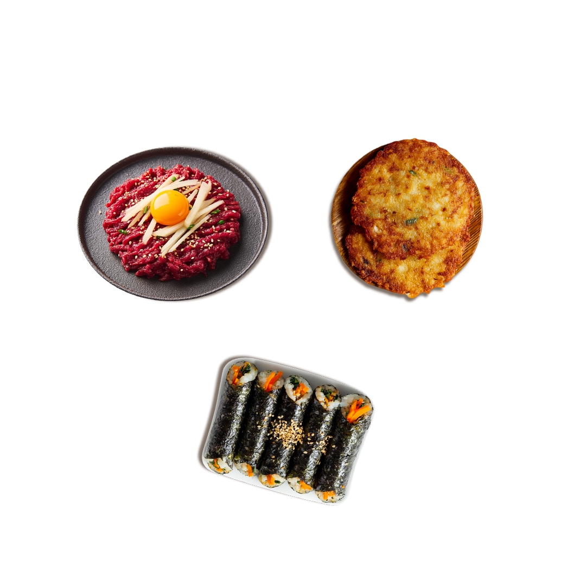
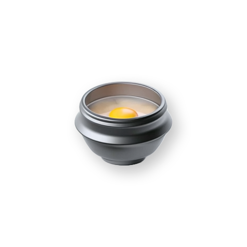
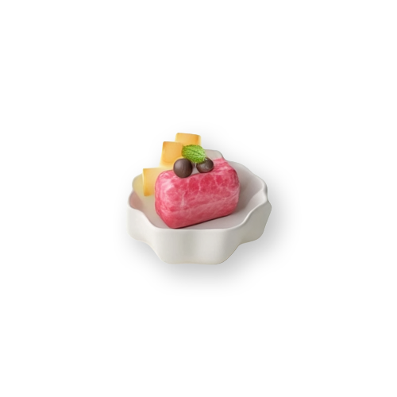
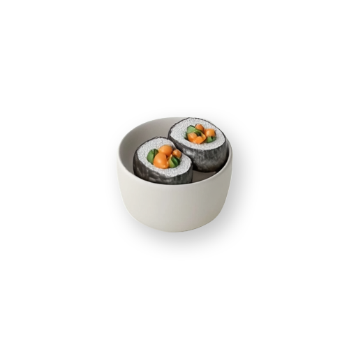

광장시장은 종로에 위치한
대한민국 최초의 상설시장으로,
다양한 먹거리와 함께 원단, 한복, 혼수, 생활잡화 등 오랜 역사를 지닌
전통 상점들이 함께 어우러진 시장입니다.
100년 전통의 서울 대표 시장
먹거리와 전통상점이
공존하는 공간
일상과 관광이 만나는
전통시장
광장시장
대표먹거리
빈대떡
Bindaetteok
Bindaetteok
광장시장의 시그니처 메뉴. 바삭한 식감과 고소한 맛이 일품


처음 방문하시나요?
방문 안내
걱정 마세요. 쉽고 편하게 안내해 드릴게요
추천코스
맛의 여정을 시작하세요
현지인들이 추천하는 음식 조합 코스-

전통 맛집 코스
광장시장의 클래식한 조합1빈대떡
2순대
3막걸리
1시간처음 방문하는 분 -

프리미엄 코스
특별한 날 추천하는 코스1육회
2빈대떡
3동동주
1.5시간특별한 날, 데이트 -

가벼운 스낵 코스
부담 없이 즐기는 코스1마약김밥
2떡볶이
3튀김
30분가볍게 먹고 싶을 때